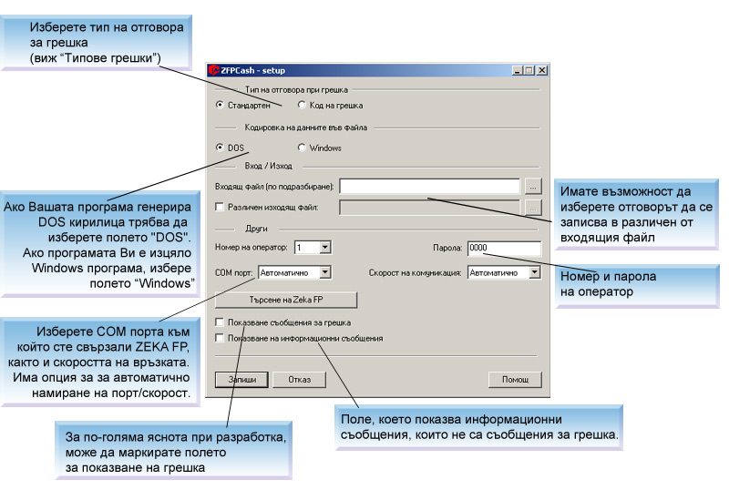

След стартиране на програмата без параметри се вижда нейния главен прозорец:

След въвеждането на настройките, натиснете бутона "Запиши" и програмата записва настройките за ФПР. Настройките се пазят във .INI файл чието име съвпада с името на изпълнимия файл и се намира в същата директория. По подразбиране файловете са ZFPCASH.EXE и ZFPCASH.INI. Ако желаете различни набори от настройки (независимо дали управляват един и същ фискален принтер или различни устройства) необходимо е да преименувате изпълнимия файл или да го копирате в друга директория. По този начин всеки изпълним файл си има своят .INI файл с настойки в собствената си директория.